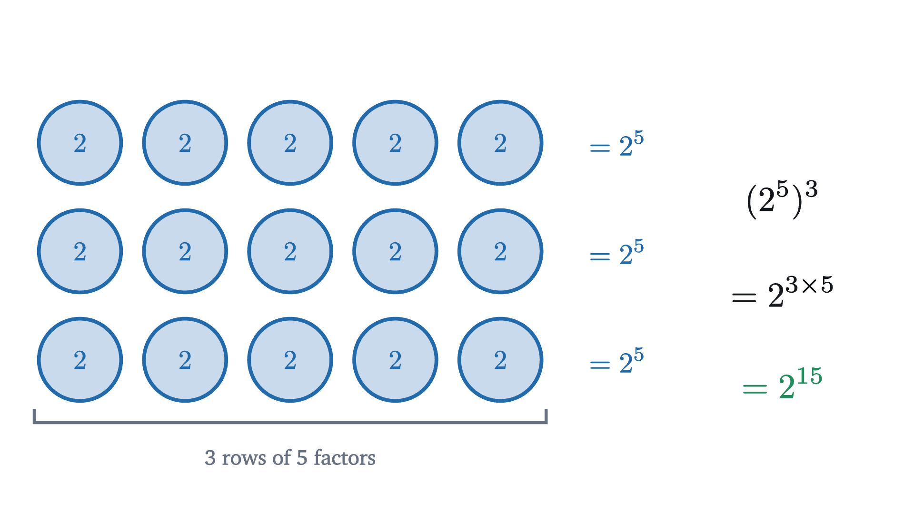
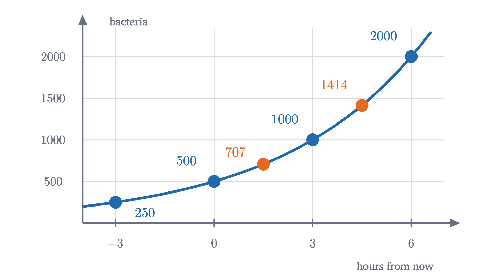

Why x⁰ = 1, and negative and fractional exponents
Powers of 2 halve as the exponent drops, and one rule, add exponents when you multiply, forces 2⁰ = 1, 2⁻¹ = 1/2 and 2^(1/2) = √2.
The expression $2^3$ means $2 \times 2 \times 2$, three factors of 2. By the same reading $2^0$ should mean “no factors of 2”, and a product with nothing in it sounds as if it ought to be nothing, which is 0. Every textbook and calculator says $2^0 = 1$ instead. It gets stranger: the same sources say $2^{-1} = \frac12$ and $2^{1/2} = \sqrt2$, and nobody can multiply a number by itself minus one times, or half a time.
These look like conventions that someone chose. They are better described as forced moves. There is one rule about exponents that is plainly true for counting numbers, and if we insist that the rule keep working, then $2^0$, $2^{-1}$ and $2^{1/2}$ have no freedom left: each can only be one number.
The pattern: one step left is one division
Start with what repeated multiplication does give us.
Read the list from left to right and each value is double the one before, because raising the exponent by 1 puts in one more factor of 2. Read it from right to left and each value is half the one before. The second reading does not need to stop at $2^1$.
Pause and try
Do the same for powers of 3. Starting from $3^3 = 27$, step left three times past $3^1$. What values does the pattern give for $3^0$, $3^{-1}$ and $3^{-2}$?
Show answerHide answer
Each step left divides by 3: $27, 9, 3$, then $3^0 = 1$, $3^{-1} = \frac13$, $3^{-2} = \frac19$. The value at exponent 0 is again 1, because one step left from $3^1 = 3$ is $3 \div 3$.
The pattern suggests $2^0 = 1$, and it suggests that the answer has nothing to do with the base: for any base $a$ other than 0, one step left from $a^1 = a$ is $a \div a = 1$.
You might object that a pattern is only a suggestion. Nothing obliges a sequence to continue the way it began. To turn the suggestion into a reason, we need to know what the pattern is a consequence of.
The rule behind the pattern
Multiply two powers of 2 and count factors.
Three factors followed by two factors is five factors. Nothing more is going on, and the same count works for any base $a$ and any positive whole numbers $m$ and $n$:
This rule is what “one step right doubles” comes from, since $2^n \times 2^1 = 2^{n+1}$. It is a fact about counting, so for positive whole exponents it is beyond dispute.
Now suppose we want to give $2^0$ a meaning, and we want the rule to remain true when one of the exponents is 0. Then we are committed to $2^0 \times 2^2 = 2^{0+2} = 2^2$. Step through what that says.
The rule demands $2^0 \times 4 = 4$. Divide both sides by 4 and $2^0 = 1$. The guess $2^0 = 0$ fails this test immediately: it would make $2^0 \times 4 = 0$, not 4.
The picture also repairs the intuition that went wrong at the start. “No factors” does mean that nothing has been multiplied in. But multiplying nothing in leaves a product unchanged, and the number that leaves products unchanged is 1, not 0. Zero is what you get from adding nothing. It helps to read $2^n$ as “start at 1 and multiply by 2, $n$ times”. Zero times leaves you at the start.
Pause and try
Use the rule $a^m \times a^n = a^{m+n}$ to decide what $2^{-3}$ has to be. (Choose a second exponent that makes the sum something you already know.)
Show answerHide answer
Pair $-3$ with $3$: the rule requires $2^{-3} \times 2^3 = 2^{-3+3} = 2^0 = 1$. So $2^{-3} \times 8 = 1$, and $2^{-3} = \frac18$. This agrees with stepping left three times from 1 in the pattern.
The argument in that answer works in general. If the rule is to hold, then $a^{-n} \times a^n = a^0 = 1$, so $a^{-n}$ must be the number that multiplies $a^n$ to give 1, namely $\frac{1}{a^n}$. A negative exponent has nothing to do with negative numbers. It counts divisions: start at 1 and divide by $a$, $n$ times.
The condition $a \ne 0$ is there because $\frac{1}{0^n}$ would be a division by zero. We have shown that these are the only definitions compatible with the rule. That is half of what we need. The other half is that with these definitions the rule really does hold, in every combination of signs, and that requires a proof.
A power of a power
One more counting fact will be needed. What is $(2^5)^3$?

It is three rows of five factors, fifteen in all. In general, for positive integers $m$ and $n$, $(a^m)^n$ is $n$ rows of $m$ factors, so
For $a \ne 0$ this extends to all integers $m$ and $n$ by going through the signs one case at a time with the definitions above. One case shows the pattern, $(a^m)^{-n} = \frac{1}{(a^m)^n} = \frac{1}{a^{mn}} = a^{-mn}$ for positive $m$ and $n$, and we leave the others as an exercise.
Half a step: what the exponent 1/2 has to be
Now the harder question. A colony of bacteria doubles every hour, so after $t$ hours it is $2^t$ times its present size. After 3 hours, 8 times. At $t = 0$, which is now, 1 times. One hour ago, at $t = -1$, half. The definitions so far match the story at every whole number of hours. But the colony does not grow in hourly jumps. What is it multiplied by in half an hour?
Pause and try
Call the half-hour factor $f$. Growing for half an hour and then another half hour is growing for one hour. Write that as an equation for $f$. Is $f = 1.5$, the number halfway between 1 and 2, a solution? Find $f$ to two decimal places by trial.
Show answerHide answer
Two half-hours multiply the colony by $f$ and then by $f$ again, and the total must be a doubling: $f \times f = 2$. The guess $1.5$ gives $1.5 \times 1.5 = 2.25$, too much. Trying smaller values: $1.4^2 = 1.96$ (too little), $1.41^2 = 1.9881$ (too little), $1.42^2 = 2.0164$ (too much). So $f$ is between 1.41 and 1.42. The exact value is $\sqrt2 = 1.41421\ldots$
The story and the rule say the same thing. If $2^{1/2}$ is to mean anything and the rule is to survive, then
so $2^{1/2}$ is a number whose square is 2. There are two such numbers, $\sqrt2$ and $-\sqrt2$, and we take the positive one, as the colony does. The rule leaves no choice in this either: $2^{1/2} = 2^{1/4} \times 2^{1/4}$ would be the square of a real number, and a square is never negative. The same reasoning with three equal steps gives $2^{1/3} \times 2^{1/3} \times 2^{1/3} = 2$, so $2^{1/3}$ is the cube root of 2, and in general $a^{1/n}$ must be an $n$th root of $a$.
Fractions with other numerators follow from the power-of-a-power rule: $\frac{3}{2} = 3 \times \frac12$, so $2^{3/2}$ should be $(2^{1/2})^3 = (\sqrt2)^3 = 2\sqrt2 \approx 2.828$. That is the colony after an hour and a half: one doubling and one half-step.
To make a definition out of this we need to be sure that the root in question exists and that there is only one positive one.
There is something to check before this definition can be trusted. The fractions $\frac12$ and $\frac24$ are the same number, so $a^{1/2}$ and $a^{2/4}$ had better be the same number too, although the definition computes them differently: one is $\sqrt{a}$, the other is $(\sqrt[4]{a})^2$.
The other two laws you may know, $(a^r)^s = a^{rs}$ and $(ab)^r = a^r b^r$ for positive $a$, $b$ and rational $r$, $s$, are true as well. We do not prove them here; the proofs run in the same style, by reducing to integer exponents and using the uniqueness of roots, and Problem 8 does one case.
The curve through all the points
We now have a value of $2^x$ for every rational $x$. Plot them, starting with whole numbers and then adding halves, quarters and eighths.
The points do not scatter. In the picture each new batch lands between its neighbors, and together they trace a curve that rises from left to right, passes through $(0, 1)$, and flattens toward the horizontal axis on the left without touching it, since no power of 2 is zero or negative.
That curve has points above irrational values of $x$ as well, such as $x = \sqrt2$ or $x = \pi$, where no fraction is available. The value there is defined as the number that the values at nearby rational exponents close in on: $2^{1.4}, 2^{1.41}, 2^{1.414}, \dots$ approach a single number, about $2.665$, and that number is called $2^{\sqrt2}$. Showing that this always works, and that the rule $a^x a^y = a^{x+y}$ survives, again uses the completeness of the real numbers, and we take it on trust here.
Worked examples

Where the rules stop
Each extension came with a condition, and each condition is needed.
Zero as a base. $0^n = 0$ for every positive integer $n$, but $0^{-1}$ would be $\frac10$, which is undefined. And $0^0$ is pulled two ways: the pattern $a^0 = 1$ says 1, and the pattern $0^n = 0$ says 0. The argument that forced $a^0 = 1$ divided by a power of $a$, which is not possible when $a = 0$, so the rule gives no verdict. In algebra and in counting problems $0^0$ is taken to be 1 by convention, because formulas then come out right: a polynomial’s constant term $c$ is written $c\,x^0$, and that should still equal $c$ at $x = 0$. In calculus $0^0$ is left undefined, because expressions in which the base and the exponent both shrink toward 0 can approach different values depending on how they shrink.
Negative bases. Integer powers of negative numbers are fine: $(-2)^3 = -8$ and $(-2)^{-2} = \frac14$. Fractional powers are not. No real number squares to $-4$, so $(-4)^{1/2}$ is not a real number. Even where a root exists the rules break. The cube root of $-8$ is $-2$, so one would like $(-8)^{1/3} = -2$. But $\frac13 = \frac26$, and computing $(-8)^{2/6}$ as the sixth root of $(-8)^2 = 64$ gives $+2$, while the definition’s own order, the sixth root first, has nothing to work with, since no real number has sixth power $-8$. Two ways of writing the same exponent give different answers, which is exactly what part (i) of the theorem rules out for positive bases. This is why fractional exponents are defined only for $a > 0$.
Common mistakes
Stepping back
The difficulty at the start was that “multiply $a$ by itself $n$ times” has no meaning unless $n$ is a positive whole number. We did not look for a cleverer reading of that phrase. We found the one property of powers that everything else depends on, $a^m \times a^n = a^{m+n}$, and asked what each new kind of exponent would have to be for that property to survive. Each time there was only one candidate, and each time we then proved that the candidate works.
This way of extending an idea, keep the law and let it tell you the definition, is one of the most common moves in mathematics. It is how the product of two negative numbers is decided, and it is how exponents are extended once more, to complex numbers, in the lesson on Euler’s formula. The rule itself turns multiplication into addition of exponents, which is the idea behind logarithms.
Check yourself
What is $9^{-1/2}$?
Problems
Problem 1
Evaluate: (a) $5^0$, (b) $2^{-4}$, (c) $\left(\frac13\right)^{-2}$, (d) $10^{-3}$.
Show solutionHide solution
(a) $5^0 = 1$.
(b) $2^{-4} = \frac{1}{2^4} = \frac{1}{16}$.
(c) $\left(\frac13\right)^{-2} = \frac{1}{(1/3)^2} = \frac{1}{1/9} = 9$. A negative exponent on a fraction turns it upside down.
(d) $10^{-3} = \frac{1}{1000} = 0.001$.
Problem 2
Evaluate: (a) $16^{1/2}$, (b) $27^{2/3}$, (c) $16^{-3/4}$, (d) $32^{0.4}$.
Show solutionHide solution
(a) The positive number whose square is 16 is 4.
(b) $27^{1/3} = 3$ because $3^3 = 27$, so $27^{2/3} = 3^2 = 9$.
(c) $16^{1/4} = 2$ because $2^4 = 16$, so $16^{-3/4} = 2^{-3} = \frac18$.
(d) $0.4 = \frac25$, and $32^{1/5} = 2$ because $2^5 = 32$. So $32^{0.4} = 2^2 = 4$.
Problem 3
Simplify, writing the answer without negative exponents: (a) $(x^2y^{-3})(x^{-5}y)$ for nonzero $x, y$; (b) $(a^4)^{1/2} \cdot a^{-3}$ for $a > 0$.
Show solutionHide solution
(a) Collect the powers of each base and add exponents: $x^{2 + (-5)}\,y^{-3 + 1} = x^{-3}y^{-2} = \dfrac{1}{x^3y^2}$.
(b) $(a^4)^{1/2}$ is the positive number whose square is $a^4$, and that is $a^2$, since $a^2 > 0$ and $(a^2)^2 = a^4$. Then $a^2 \cdot a^{-3} = a^{-1} = \dfrac1a$.
Problem 4
Our way of writing numbers uses powers of ten. (a) Continue the pattern of place values $10^2, 10^1, \dots$ two more steps and use it to write $4.07$ as a sum of digits times powers of 10. (b) Write $0.00032$ in the form $3.2 \times 10^n$.
Show solutionHide solution
(a) Each place is worth a tenth of the place to its left: $10^2 = 100$, $10^1 = 10$, $10^0 = 1$, $10^{-1} = \frac{1}{10}$, $10^{-2} = \frac{1}{100}$. So the units place is the $10^0$ place, and
(b) Moving the decimal point one place to the left divides by 10, which lowers the exponent by 1. To get from $3.2$ to $0.00032$ the point moves 4 places left, so $0.00032 = 3.2 \times 10^{-4}$. Check: $3.2 \times \frac{1}{10000} = 0.00032$.
Problem 5
A dose of a medicine leaves 80 mg in the bloodstream now, and the amount halves every 6 hours. (a) Write a formula for the amount $A(t)$ in mg after $t$ hours. (b) Find the amount after 12 hours and after 3 hours. (c) What does the formula give for $t = -6$, and what does that mean?
Show solutionHide solution
(a) Each 6 hours multiplies the amount by $\frac12 = 2^{-1}$, and $t$ hours is $\frac{t}{6}$ such periods: $A(t) = 80 \times 2^{-t/6}$.
(b) $A(12) = 80 \times 2^{-2} = 20$ mg. $A(3) = 80 \times 2^{-1/2} = \frac{80}{\sqrt2} \approx 56.6$ mg. This is less than 60, the value halfway between 80 and 40, because the amount falls faster early in each halving period.
(c) $A(-6) = 80 \times 2^{1} = 160$ mg. Six hours ago there was twice as much, provided the dose had already been given by then.
Problem 6
Without a calculator, decide which is larger: (a) $2^{3/2}$ or $3$; (b) $2^{1/2}$ or $3^{1/3}$.
Show solutionHide solution
For positive numbers, the larger number has the larger $n$th power (this was the “at most one” step in the proof about roots). So compare suitable powers.
(a) Square both: $(2^{3/2})^2 = 2^3 = 8$ and $3^2 = 9$. Since $8 < 9$, $2^{3/2} < 3$. (Indeed $2^{3/2} = 2\sqrt2 \approx 2.83$.)
(b) Raise both to the 6th power, which clears both roots: $(2^{1/2})^6 = 2^3 = 8$ and $(3^{1/3})^6 = 3^2 = 9$. Since $8 < 9$, $2^{1/2} < 3^{1/3}$. (They are about $1.414$ and $1.442$.)
Problem 7
Find the error in this argument. “$-1 = (-1)^1 = (-1)^{2/2} = \left((-1)^2\right)^{1/2} = 1^{1/2} = 1$, so $-1 = 1$.”
Show solutionHide solution
The first two equalities are harmless, and so is the last: $1^{1/2} = 1$. The false step is $(-1)^{2/2} = \left((-1)^2\right)^{1/2}$. It uses the law $(a^r)^s = a^{rs}$ with $a = -1$, $r = 2$ and $s = \frac12$, and it rewrites the exponent $1$ as $\frac22$. Both the law for fractional exponents and the fact that the value does not depend on how the fraction is written were established only for a positive base, and their proofs used the uniqueness of the positive root. For $a = -1$ the number $(-1)^2 = 1$ has two square roots, $1$ and $-1$, and the step silently replaces one by the other.
Problem 8
Let $a$ and $b$ be positive real numbers and $n$ a positive integer. (a) Prove that $(ab)^{1/n} = a^{1/n}\,b^{1/n}$. (b) Use this to write $\sqrt{12}$ as a whole number times $\sqrt3$.
Show solutionHide solution
(a) Let $c = a^{1/n}$ and $d = b^{1/n}$, so $c$ and $d$ are positive, $c^n = a$ and $d^n = b$. The product $cd$ is positive, and its $n$th power is $n$ factors of $cd$, which can be reordered as $n$ factors of $c$ times $n$ factors of $d$:
So $cd$ is a positive number whose $n$th power is $ab$. There is only one such number, and by definition it is $(ab)^{1/n}$. Hence $(ab)^{1/n} = cd = a^{1/n}b^{1/n}$.
(b) $\sqrt{12} = (4 \times 3)^{1/2} = 4^{1/2} \times 3^{1/2} = 2\sqrt3$. Check by squaring: $(2\sqrt3)^2 = 4 \times 3 = 12$.